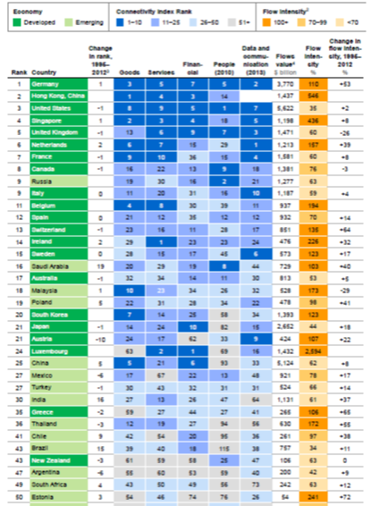

For SME and nation
Two things that caught Moxie’s eye recently.
1) Mike O’Donnell has a few thoughts about how important it is for SMEs to get online. He is not the only one to point out that more than half of customers are shopping online (PDF) and so if you are like the 60% or so of SMEs that are not online, you are missing out. The figures are not so bad for larger firms – only around 20% of firms with six or more employees are invisible online. Still, work to do.
2) The McKinsey Global Institute released a report about how tightly countries are linked in to global flows based on measurements of flows of goods, services, money, people and internet traffic. New Zealand ranks at 43 (for comparison, we are thirtieth in the world on the latest IMF rankings of GDP per capita), with low rankings for goods (61), services (59) and finance (58), and a relatively high ranking for people (25).
This is the key table from the Executive Summary.
{kind=link}
A few thoughts occur to me.
Remoteness and the possibilities of the internet
It is interesting to see quantification of remoteness (page 5-6 of Exec Summary):
“We also find that countries that are more connected within global networks of flows experience larger benefits in terms of GDP growth than countries that are less connected. The most central countries to the global network of flows in our database can expect to increase GDP growth from flows up to 40 percent more than the least connected countries. For example, Thailand, a high-centrality country, would disproportionately benefit compared with Laos, its low-centrality neighbor.”
This “centrality” is measured by the number of countries that a country trades with: the more partners, the higher GDP growth, which links obviously with the OECD paper the Productivity Commission released (and the excellent infographic) saying that linking New Zealand in to global supply chains would strongly improve GDP.
The McKinsey report (page 22) comments on the importance of the internet, saying
“Our findings indicate that data and communication flows are likely to contribute as much to growth as flows of goods, services, and finance combined, given the former’s higher historical and expected growth rates.”
Which seems like quite a big deal for somewhere so remote that it can not easily get involved in global supply chains for goods and services. This is econometric modelling, so we should not get too excited. It goes on though, encouragingly (page 43):
“Academic literature on the impact of distance on trade finds that the effects of distance have begun to decline, driven in large part by digitization. Barriers such as transportation costs or regulation on cross-border flows are significantly lower for digital or even digitally enabled flows than traditional physical flows. One study of e‑commerce in the European Union (EU) found that costs associated with distance affected offline trade far more than online B2C trade. It also found that digitization cuts the distance effect of physical flows by two-thirds.“
Which to me suggests that smart use of internet services could genuinely help New Zealand improve its connectedness with the world, and much more easily than increasing traditional goods flows.
New Zealand and Australia
Australia is 25-30 places ahead of us in the rankings for goods and services trade, and 44 on financial flows, which is consistent both wth Australia being more connected into global supply chains than New Zealand, and their financial sector being far more involved in the world than ours. Interestingly, overall we have a higher flows intensity than them (63% to 53%), which is a measure of total trade plus financial flows divided by GDP (adjusted to avoid disfavouring large countries). The developed country company we keep (UK, France, Italy, Spain) is heartening, but nowhere near the real small country trade centres like the Netherlands (157), Belgium (194), Singapore (436) or Hong Kong (546). See the table on page 7 of the Exec Summary.
People flows
New Zealand ranks more highly on people flows than on other measures. Looking at the technical appendix (page 141), the people flow is measured by the stock of foreign-born in the population, plus the flows of tourists, students and airline flight capacity. I think therefore, our relatively higher ranking reflects our relatively open immigration policy and the strong (and ongoing) outward migration of New Zealand-born citizens to Australia that together mean we have a quickly changing population, along with our enthusiastic welcoming of tourists and students.
The mix of flows
New Zealand generally has much stronger migration and tourism connections with the UK and Australia than it does goods and services trade. Put another way, goods trade is with a more diverse set of countries than our migration and tourism flows. There is a lot of support for McKinsey’s point that diversity in goods trade is good for GDP growth. The same is true for other flows. Greater immigration diversity (both as source countries and as places to send New Zealanders) would benefit the nation, and in particular, working to get options for New Zealanders to live and work in Asia and in America would be a Good Thing.
Written by:
Hayden Glass
Consulting economist for the Sapere Research Group and Moxie Sessions convenor.